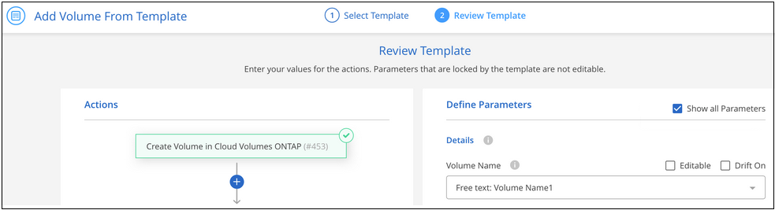
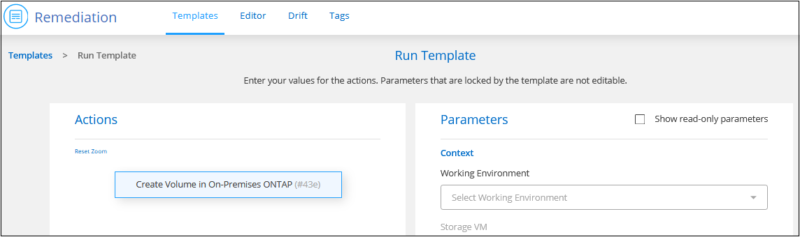
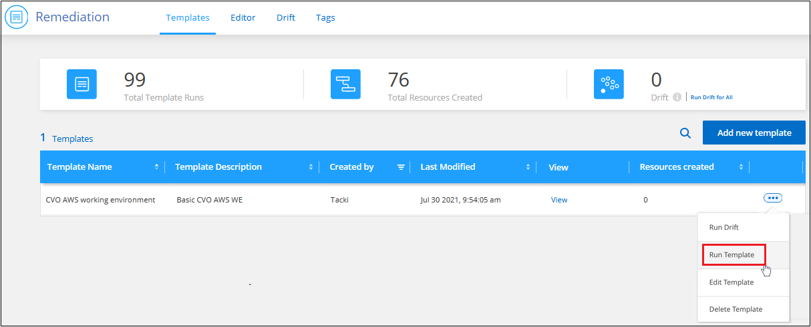
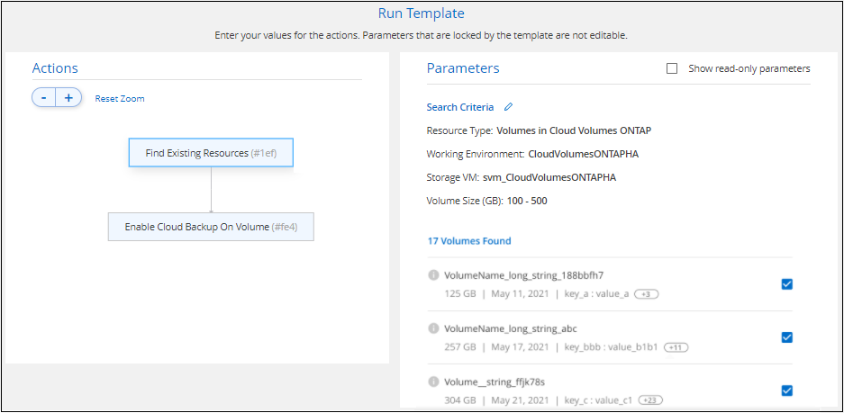

はじめに
はじめに
テンプレートを使用してリソースを作成または変更する
 変更を提案
変更を提案
組織が構築したアプリケーションテンプレートの中から 1 つ選択して、特定のワークロードとアプリケーションに最適化された作業環境またはボリュームを作成します。また、テンプレートを使用してアクティブ化することもできます "BlueXPのバックアップとリカバリ"、 "BlueXPの分類"および "BlueXPレプリケーション" をクリックします。
テンプレートを使用すると、 Cloud Volumes ONTAP 、 Azure NetApp Files 、およびオンプレミスの ONTAP システム用のボリュームを作成できます。
クイックスタート
これらの手順を実行すると、すぐに作業を開始できます。また、残りのセクションまでスクロールして詳細を確認することもできます。
 必要な前提条件を確認する
必要な前提条件を確認する-
テンプレートを使用して Cloud Volumes ONTAP 、オンプレミス ONTAP 、または Azure NetApp Files システム用のボリュームを作成する前に、ボリュームを導入する適切な作業環境にアクセスできることを確認してください。
-
テンプレートが、などのボリュームのクラウドサービスをアクティブにした場合 "BlueXPのバックアップとリカバリ" または "BlueXPの分類"をクリックして、ご使用の環境でサービスがアクティブでライセンスされていることを確認してください。
 Application Templates サービスを起動します
Application Templates サービスを起動します[正常性]>[修正]を選択し、[*テンプレート]タブをクリックします。
 テンプレートを実行し、パラメータを定義して、リソースを構築します
テンプレートを実行し、パラメータを定義して、リソースを構築しますテンプレートを選択し、 Run Template をクリックして、編集可能フィールドに値を入力し、リソースを作成します。
要件
以下の要件を読み、サポートされている構成になっていることを確認してください。
-
コネクタがない場合は、 "コネクターの作成方法を参照してください" AWS 、 Azure 、 GCP 向け。
-
Cloud Volumes ONTAP ボリュームを作成するときは、 Cloud Volumes ONTAP の作業環境が利用可能であることを確認してください。
-
オンプレミスの ONTAP ボリュームを作成する場合は、オンプレミスの ONTAP 作業環境が利用可能であることを確認します。
-
Azure NetApp Files ボリュームを作成するときは、 Azure NetApp Files の作業環境が利用可能であることを確認してください。
-
テンプレートが、などのボリュームのクラウドサービスをアクティブにした場合 "BlueXPのバックアップとリカバリ"、 "BlueXPの分類"または "BlueXPレプリケーション"をクリックして、ご使用の環境でサービスがアクティブでライセンスされていることを確認してください。
ボリュームテンプレートを選択して実行します
テンプレートを選択して実行し、新しいボリュームを作成する方法は複数あります。
-
作業環境からボリュームテンプレートを実行します
-
Templates ダッシュボードからボリュームテンプレートを実行します
どの方法を選択する場合でも、定義する必要があるボリュームの必須パラメータに関する詳細を以下のセクションで確認できます。
作業環境からボリュームテンプレートを実行します
既存の作業環境にボリュームを追加するには '_Working Environment_page および _Volume Details_page を使用します
-
作業環境ページまたは _ ボリューム詳細 _ ページで、 * テンプレートからボリュームを追加 * をクリックします。

Templates Dashboard が表示され、選択した作業環境に適用できるテンプレートのみがリストされます。たとえば、 Cloud Volumes ONTAP テンプレートのみが表示されます。
-
をクリックします
 アイコン"] および * テンプレートの実行 * 。
アイコン"] および * テンプレートの実行 * 。
Add_Volume from Template_page が表示されます。
-
編集可能なフィールドに値を入力してボリュームを作成し、 * テンプレートの実行 * をクリックします。

Templates Dashboard からボリュームテンプレートを実行します
既存の作業環境にボリュームを追加するには、 Templates Dashboard を使用します。
-
[正常性]>[修正]を選択し、[*テンプレート]タブをクリックします。
Templates Dashboard が表示されます。
-
使用するテンプレートで、をクリックします
アイコン"] および * テンプレートの実行 * 。
Run Template_page が表示されます。
-
編集可能なフィールドに値を入力してボリュームを作成し、 * テンプレートの実行 * をクリックします。

ダッシュボードからテンプレートを実行するときは、作業環境やその他の変数（ Storage VM やアグリゲートなど）を選択する必要があります。作業環境からテンプレートを実行すると、作業環境が自動的に入力されます。
作業環境テンプレートを選択して実行します
この機能用のテンプレートを作成している場合は、 _ テンプレートダッシュボード _ から新しい作業環境を作成できます。
作業環境の作成に必要な詳細については、を参照してください "AWS での Cloud Volumes ONTAP の起動"。
-
[正常性]>[修正]を選択し、[*テンプレート]タブをクリックします。
Templates Dashboard が表示されます。
-
使用するテンプレートで、をクリックします
アイコン"] および * テンプレートの実行 * 。
Run Template_page が表示されます。
-
編集可能なフィールドに値を入力して作業環境と最初のボリュームを作成し、 * テンプレートの実行 * をクリックします。

既存のリソースを検出するテンプレートを選択して実行します
特定のリソース（ボリュームなど）を検出するテンプレートを実行し、そのリソースでクラウドサービス（BlueXPのバックアップとリカバリなど）を有効にすることができます（この機能を使用してテンプレートを作成済みの場合）。テンプレートの実行中に若干の調整を加えて、クラウドサービスを適切なリソースにのみ適用することができます。
-
[正常性]>[修正]を選択し、[*テンプレート]タブをクリックします。
Templates Dashboard が表示されます。
-
使用するテンプレートで、をクリックします
アイコン"] および * テンプレートの実行 * 。
_Run Template_page が表示され、テンプレートで定義された検索がすぐに実行されて、条件に一致するボリュームが検索されます。
-
返されたボリュームのリストを _Volume Results_area に表示します。

-
想定どおりの結果が得られたら、テンプレートの_Enable Cloud Backup on Volume_partにある条件に従って、BlueXPのバックアップとリカバリを有効にする各ボリュームのチェックボックスを選択し、*[テンプレートの実行]*をクリックします。
結果が想定どおりでない場合は、をクリックします
 をクリックし、さらに検索条件を絞り込んでください。
をクリックし、さらに検索条件を絞り込んでください。
テンプレートが実行され、検索条件で選択した各ボリュームでBlueXPのバックアップとリカバリが有効になります。
すべてのエラーは、 _Running Your Template_page で呼び出され、必要に応じて問題を解決できます。